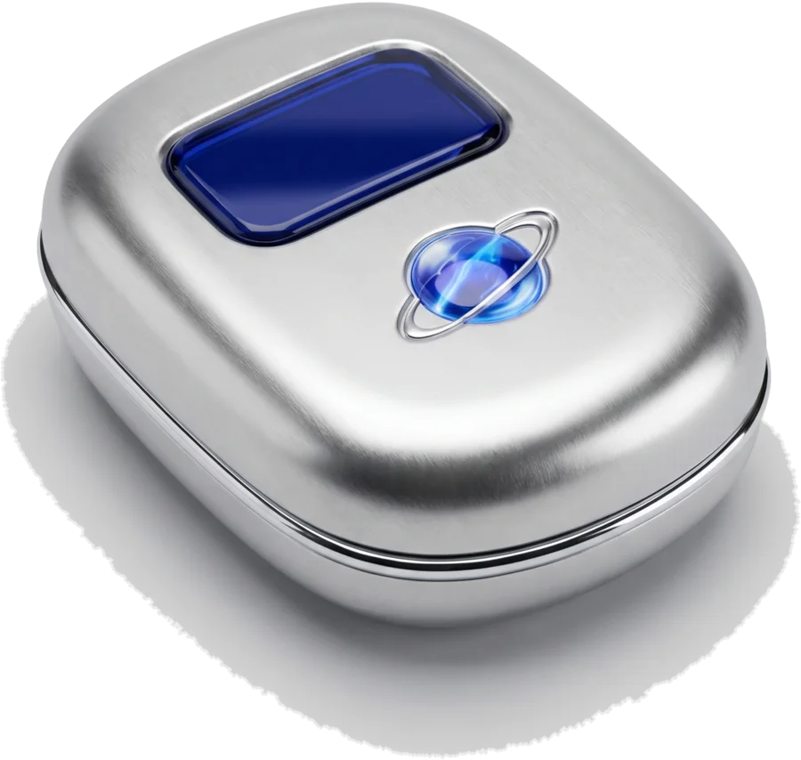

Chỗ trò chuyện riêng của nhóm bạn mình.
Tin nhắn được khóa ngay trên máy bạn, chỉ người được mời mới bước vào được. Không quảng cáo, không theo dõi.
Bản 1.4.2, miễn phí, cho Windows 10 và 11 (64-bit). Tệp cài khoảng 128 MB, tải thẳng từ GitHub.
Bản cài chạy trên máy tính Windows. Mở trang này trên máy tính để tải, hoặc để gửi sang.

Bên trong có gì
- Mã hóa đầu-cuối
- Tin nhắn, ảnh, video và tệp được khóa trên máy người gửi bằng libsodium. Máy chủ chỉ chuyển những gói đã khóa.
- Chỉ người được mời
- Vào bằng link mời, quản trị viên duyệt từng người. Người lạ không có đường vào.
- Mã an toàn
- Mỗi cặp bạn có một mã 60 số. So với nhau là biết chắc không ai đứng giữa nghe lén.
- Tin tự hủy
- Bật lên là tin nhắn tự biến mất sau một lúc. Có những chuyện chỉ nên nói một lần.
- Gửi tệp
- Mỗi tệp tới 200 MB, được mã hóa trước khi rời khỏi máy.
- Những thứ quen thuộc
- Đang gõ, đã xem, trả lời trích dẫn, sửa tin đã gửi.
Còn vài thứ nữa, nhưng phải mở nắp mới thấy.
Tin nhắn đi đường nào
Máy chủ chỉ là người đưa thư, và nó không có chìa khóa.
- Máy bạnKhóa tin nhắn bằng khóa chỉ bạn và người nhận có.
- Máy chủ chuyển tiếpGiữ và chuyển gói đã khóa. Không đọc được nội dung hay tên tệp.
- Máy bạn bèMở khóa và đọc, ngay trên máy của họ.
Google Drive. Tệp đính kèm (đã mã hóa) có thể được lưu trong
Google Drive của chính chủ máy chủ, trong một thư mục do DuckMess
tạo. DuckMess chỉ xin quyền drive.file: chỉ thấy và sửa
các tệp do chính DuckMess tạo, không đọc được tệp nào khác trong
Drive.
Dữ liệu. Không quảng cáo, không trình theo dõi, không bán dữ liệu. Chi tiết trong Chính sách bảo mật.
DuckMess is a private, end-to-end encrypted, self-hosted chat app
for a small group of friends. Messages, photos, videos and files are
encrypted on the sender's device; the relay server only handles
encrypted data and never has the keys. Access is invite-only. No
ads, no tracking, no data sales. Encrypted attachments may be stored
in the server owner's own Google Drive, in a folder created by
DuckMess, using only the
drive.file scope.
Lắp đặt
-
Tải tệp cài. Bấm nút tải ở đầu trang. Tệp
DuckMess-Setup.exelấy thẳng từ trang phát hành GitHub của DuckMess. - Mở tệp. Windows có thể hiện màn hình xanh như hình dưới, vì DuckMess chưa có chữ ký số. Bấm More info, rồi Run anyway.
- Vào nhóm. Mở DuckMess, dán link mời bạn bè gửi, chờ quản trị viên duyệt.
Windows protected your PC
Microsoft Defender SmartScreen prevented an unrecognized app from starting…
More infobấm trước
Cảnh báo này hiện với mọi ứng dụng mới chưa mua chứng chỉ ký số. Muốn
chắc tệp đúng là bản gốc, so mã SHA-256 trên tem ở cuối trang: mở
PowerShell trong thư mục Downloads và chạy
Get-FileHash .\DuckMess-Setup.exe.
Hỏi đáp
DuckMess có mất phí không?
Không. Miễn phí, không quảng cáo, không gói trả phí.
Ai đọc được tin nhắn của tôi?
Chỉ những người trong cuộc trò chuyện. Máy chủ chuyển tiếp chỉ giữ dữ liệu đã mã hóa và không có khóa để mở.
Làm sao để vào được nhóm?
Bạn cần link mời từ một người đang dùng DuckMess. Dán link vào app, quản trị viên của nhóm sẽ duyệt.
Có bản cho Mac hay điện thoại không?
Hiện DuckMess có bản cài cho Windows 10 và 11 (64-bit).
Cập nhật bản mới thế nào?
Quay lại trang này, tải bản mới và cài đè lên. Các bản trước nằm ở trang phát hành.
DuckMess
| Phiên bản | 1.4.2 |
|---|---|
| Hệ điều hành | Windows 10, 11 (64-bit) |
| Tệp cài | DuckMess-Setup.exe, 128 MB |
| Mã hóa | Đầu-cuối, libsodium |
| SHA-256 | B2846846E20A6BB96BD2B69B41EE6E1E993818C47606924FFAABAC848DC7603B |
| Nguồn tải | GitHub Releases |
Chính sách bảo mật / Privacy Policy Điều khoản sử dụng / Terms of Service